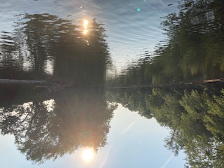

Fly Fishing
While starting my journey as a software engineer I discovered that alot of my free time staring at a screen.
I have always been an avid fisherman but getting into fly fishing reignited my passion for the outdoors.
Both spending time in rivers as well as tying my own flies it has been fun journey so far.
I have spent alot of my free time not coding doing these.
Fly Tying
When I was growing up one of my favorite things was fishing. I remember taking the Fly Fishing merit badge as a kid
thinking about how fun it was tying flies. I also remember that the only way I could get away with fishing all day was by doing fishing or water related badges.
This is the first flie I tied in over 10 years. It is called a Clouser Minnow, I could only get black fur when I went to the fly shop so I will have to go back for more.
Mad River Outfitters
This is the link to the youtube channel that I like to watch for fly tying tutorials and just other tips.
Other Hobbies

Another thing I like about fly fishing is that it combines itself with some of my other hobbies, in this case hiking and photography, very nicely.
This photo was taken by me as the sun was setting on our walk back down the river.